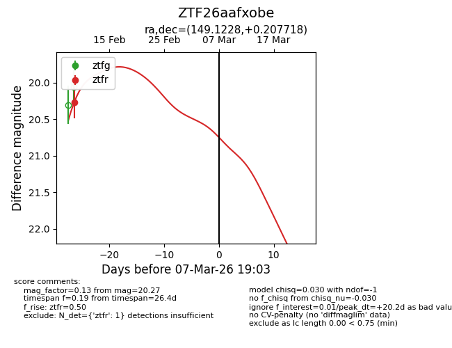
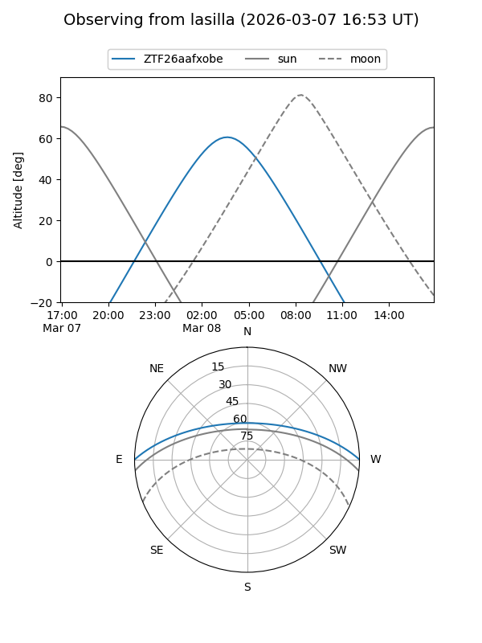
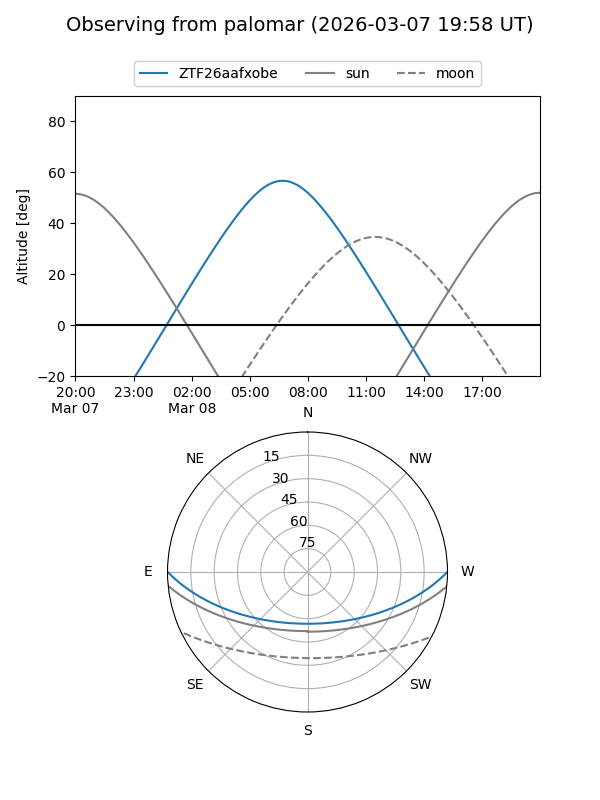
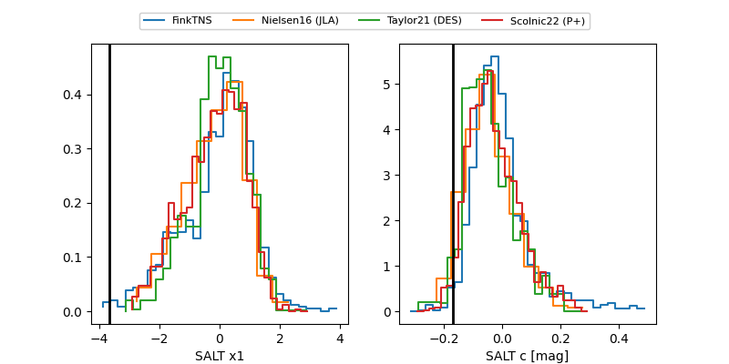

ZTF26aafxobe
Target ZTF26aafxobe at 2026-03-07 19:05
Aliases and brokers:
FINK: link
Lasair: link
ALeRCE: link
alt names
ZTF26aafxobe (ztf,fink_ztf)
Coordinates:
equatorial (ra, dec) = 149.1228,+0.20772
equatorial (HMS+DMS) = 09:56:29.48,+00:12:27.79
galactic (l, b) = (238.1937,+40.14225)
Flags:
Photometry:
last ztfr=20.27
1 ztfr detections
Lightcurve

Visibility


Additional plots
